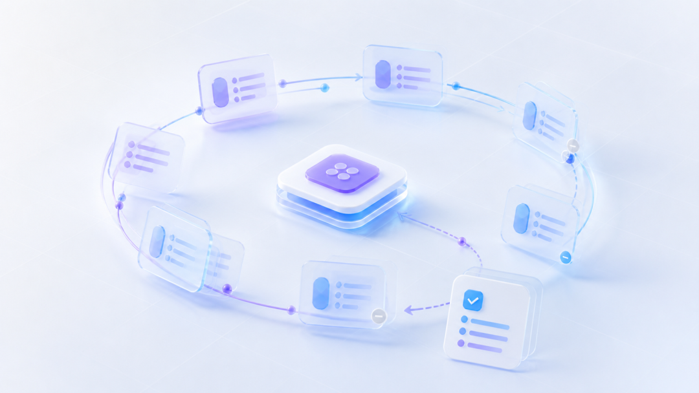
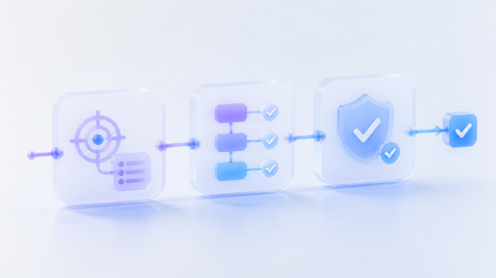
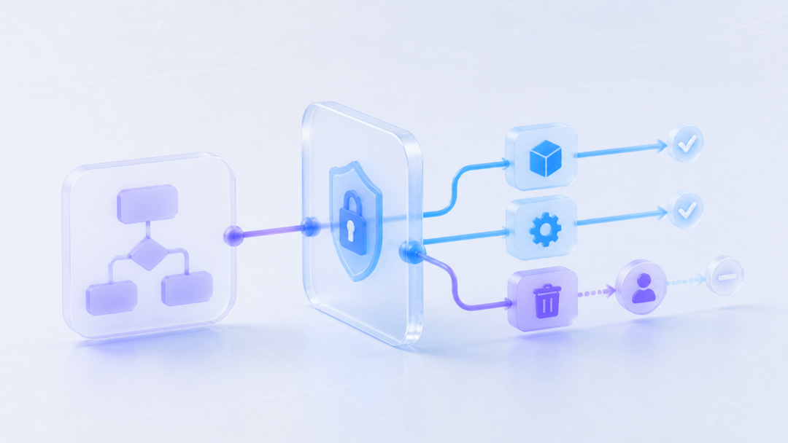

换一个同事使用，同一项任务又要从头解释：）
团队刚改完规则，旧版本还在被人复制：）
如果这些问题经常出现，继续给 Prompt 加内容，只会让它更难找、更难改，也更容易拿错。问题已经从“这次怎样向 AI 说明任务”，变成“团队怎样让 AI 每次都按同一套流程做”。
Skill 解决的就是后一件事。它把一类任务会反复用到的步骤、资料和检查方式放在一起，让 AI 下次遇到同类任务时继续使用。
它不会让模型自动懂业务。团队仍然要写清需要什么材料、按什么顺序处理、缺少信息时怎么办，以及哪些决定必须交给人。
我判断一个 Skill 有没有用，只看它能不能减少漏项和返工。下面用需求评审这个普通场景，把这件事走一遍。
当团队开始反复解释同一件事
一次需求评审要看很多内容。目标用户是谁、在什么场景下遇到问题、现在怎样解决；新方案能不能走通，出错后怎么办，上线以后看什么数据。
只用 Prompt，每个人都要重新贴评审规则、业务背景和输出模板。有人拿了旧版本，或者漏了一份材料，AI 的判断就会变化。
如果团队在同一个项目里维护 Skill，就能共用一份评审清单和模板。产品经理提交文档后，AI 先查材料，再按固定顺序检查，最后用相同格式列出问题。规则调整后，团队只改这一份 Skill，再让客户端重新加载。
一项工作是否值得做成 Skill，可以先看三个条件：
这项工作经常重复。
执行步骤已经比较稳定。
团队能够判断结果是否合格。
一次性任务继续使用 Prompt 更省事。规则还在频繁变化时，先用检查表更容易修改。三个条件都满足，再考虑 Skill。

一个 Skill 要做对三件事
团队只需检查三件事。AI 有没有在该用时调用它，调用后有没有按步骤做，交付前有没有检查漏项。
用对任务。Skill 的描述要说清它做什么、什么时候使用。“帮助分析产品需求”范围太大，修改文案也可能被算进去。
可以改成“用户提交已有需求文档并请求检查时使用；修改宣传文案时不用”。在支持自动调用的客户端里，这段描述也会影响AI 是否调用它。
按步骤做。AI 先看目标用户、业务背景和关键数据有没有写清。缺少会影响结论的材料，就列出缺口，请用户补充；还能继续检查的部分照常进行，同时标明哪些问题暂时不能判断。
交付前复查。报告至少分清三类内容：已经确认的问题、证据不足的疑点、必须由产品经理决定的取舍。每个重要判断后面都要写明依据。
SKILL.md 保存主要步骤，参考文件保存详细规则和模板，脚本检查必填字段和格式。
支持 Agent Skills 规范的客户端会先让 Agent 看到 Skill 的名称和描述；用户点名调用，或者 Agent 决定使用它时，再读取完整指令，其他资源按需打开。这样，AI 不用每次先读完全部资料。这种按需读取的方式叫渐进式加载。

Skill 写流程，平台给工具和权限
Skill 里可以写“读取文档并运行检查脚本”。平台没有运行脚本的功能，这一步就做不了。Skill 负责保存做法，能否读取文件、运行工具和访问数据，由平台决定。
换个平台时，评审步骤和模板可以继续使用，文件权限和工具配置要重新检查。
权限也一样。在 Skill 里写“不要删除文件”，不能真正拦住删除操作。平台如果仍允许 AI 使用删除工具，就还有误操作风险。
例如，Claude Code 里的 allowed-tools 会让列出的工具在调用 Skill 的这一轮免去逐次审批。用户发出下一条消息后，这项临时授权清除。
它不会自动禁用其他工具，其他工具仍按原有权限设置处理。
涉及删除、发布或付款时，要由平台限制工具和数据范围，执行前再让人确认。另一款产品能够识别 SKILL.md 和规范规定的字段，只能说明文件格式兼容。需要的工具在不在，高风险操作是否仍需确认，还要重新验证。

先做一个，再决定要不要继续
Skill 做完后，只测两件事：有没有用对，结果有没有变好
先准备一些真实请求，里面既有需求评审，也有改文案、写介绍等无关任务。在支持自动调用的客户端里，检查 AI 该调用时有没有调用，不该调用时有没有误用。
再找几份已经完成过人工评审的需求文档，在全新对话里分别运行有 Skill 和无 Skill 的版本。两次使用相同材料，关键样本可以多跑几次，然后比较：
漏掉的关键问题是不是更少。
新增的误判是不是更多。
产品经理还要返工多久。
多读的资料和维护时间值不值得。
官方文档也建议把调用是否准确和输出质量分开评测，并用无Skill的结果作对照。
测试可以得出停止的结论。普通 Prompt 已经能稳定完成任务，或者 Skill 没有减少关键遗漏，就退回 Prompt、模板或检查表。
下次评审时，拿几份过去的需求文档各跑两组：一组只用 Prompt，一组使用只包含核心步骤的 Skill。以人工评审为参照，比较漏项、误判和返工时间，再决定要不要继续做。